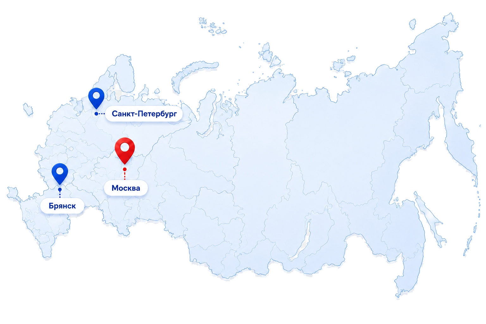

Открыта запись на консультации по обращениям в суд
Юристы помогают подготовить документы, уточнить сроки подачи жалобы и разобрать возможный порядок защиты прав.
Новости и результаты
Публикуем обновления платформы, результаты работы с обращениями, расписание приемов и важные материалы для граждан.
Собрали ключевые обновления по правовой помощи, общественному контролю и публичному реестру обращений.
Юристы помогают подготовить документы, уточнить сроки подачи жалобы и разобрать возможный порядок защиты прав.
Команда фиксирует обращения жителей, собирает документы и передает системные проблемы в публичный реестр.
В отчете собраны статусы, решенные вопросы и обращения, которые требуют дополнительной проверки.
В реестр добавлены новые категории обращений, статусы проверки и отдельные отметки по решенным проблемам.

Жители Брянска, Москвы и Санкт-Петербурга могут направлять материалы по городским проблемам через единый маршрут.
В личном кабинете обновлены уведомления и подсказки, чтобы заявители быстрее видели движение по своей жалобе.
Опишите ситуацию, приложите документы и фото. После проверки обращение попадет в работу команды.